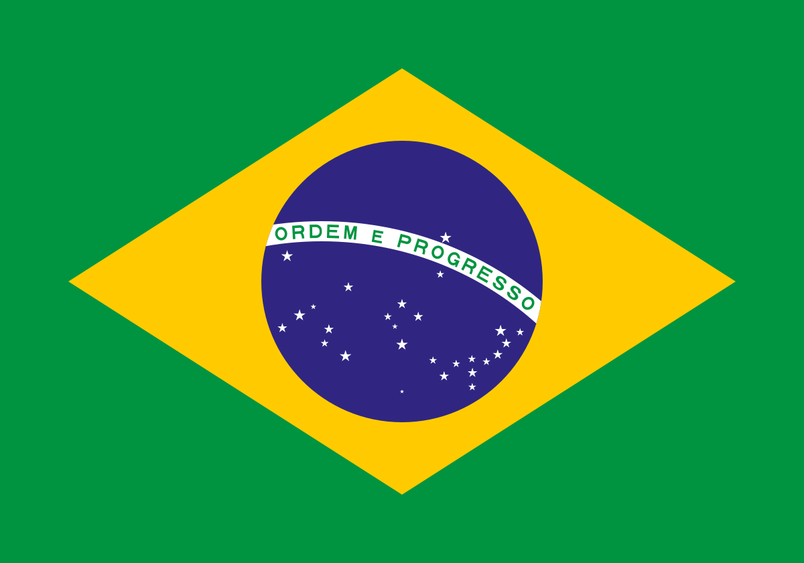

O Anúncio Surpreendente
No último fim de semana, Elon Musk, o controverso CEO da Tesla e SpaceX, anunciou uma decisão inesperada: o banimento do Twitter no Brasil. O movimento, que pegou muitos de surpresa, tem gerado um burburinho significativo nas redes sociais e na mídia tradicional.

Motivos por trás da Decisão
De acordo com Musk, a decisão foi tomada devido a questões de conformidade regulatória e preocupações com a disseminação de desinformação. Em uma declaração pública, ele alegou que o Twitter estava enfrentando dificuldades para cumprir as normas locais e garantir um ambiente digital seguro.
Impacto no Brasil
A decisão afetou milhões de usuários brasileiros que utilizam a plataforma para se conectar com amigos, familiares e para fins profissionais. Especialistas em mídia social estão preocupados com o impacto que a ausência do Twitter pode ter na comunicação e no marketing digital no país.
Reações da Comunidade
A reação ao banimento foi mista. Muitos usuários expressaram sua frustração nas plataformas alternativas, enquanto outros defenderam a decisão, acreditando que poderia melhorar a qualidade da informação disponível online.
Próximos Passos
Enquanto o Twitter permanece inacessível no Brasil, a comunidade tecnológica e as autoridades estão avaliando os próximos passos. O governo brasileiro emitiu um comunicado solicitando mais esclarecimentos sobre a decisão e prometeu buscar uma solução que permita o retorno da plataforma ao país.